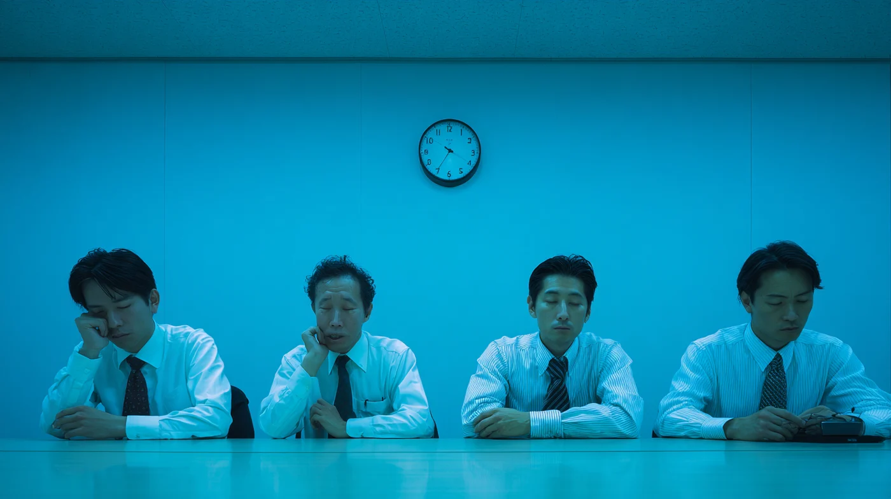

それ、なんとかなる？ › 会議・チームの進め方
- 01 / Problem問題
会議が毎回だらだら終わる。決めたはずのことが、翌週には消えている。
- 02 / Answer結論
会議の前に「目的」と「決めること」を1枚にしておく。
- 03 / Why Us木下スタジオなら
設計だけでなく、当日の進行まで引き受けます。
- 04 / Goalゴール
次からは社内だけで回せるようになる。
「また何も決まらなかった」
決める場に変えるのは、紙1枚でできます。

こんなこと、ありませんか。
ひとつでも当てはまれば、相談してください。
- 会議が毎回だらだら終わる会議ごとに「目的」と「決めること」を1枚にします。
- 何のためにやっているか分からない目的から逆算して、やる・やらないを決めます。
- チームの話がかみ合わない進行役として入り、言葉と順番をそろえます。
- 決めたはずのことが、翌週には消えている決まったことと、次にやる人・期限を1枚に残します。
できること
形を作る前の、決め方・進め方の部分です。
- 会議の設計と進行目的・決めること・時間割を作り、当日の進行もします。
- チームのコミュニケーション誰が何を決めるか、どこで話すかを整理します。
- ワークショップ社内で考える場を、準備から進行まで。
- 共有の資料決まったことを、全員が同じ絵で見られる形に。
- 会議の型づくり次からは社内だけで回せるよう、雛形をお渡しします。
- 議事の整理話した内容を、読める形にまとめ直します。
進め方
窓口も作るのも木下ひとり。伝言ゲームがないぶん、速く進みます。
- 01 / Observe会議に同席するいつもの会議を、そのまま見せてください。
- 02 / Define目的を出す何を決める場なのかを、言葉にします。
- 03 / Sheet1枚にする目的・決めること・時間割を1枚にまとめます。
- 04 / Run進行する当日の進行をします。慣れたら社内だけで回せます。
料金のめやす
単発でも、月ごとの伴走でも。
| 1時間の相談 | 5,000円オンライン。画面を見ながら |
|---|---|
| 会議1回の設計＋進行 | 20,000円〜決めることの整理から、その場の進行まで |
| 月ごとの伴走 | 40,000円／月月2回の打ち合わせ＋その間の相談 |
よくある質問
ほかに気になることは、LINEでそのまま聞いてください。
デザインの話でなくても頼めますか？
頼めます。むしろ、形を作る前の段階が一番効きます。
小さい会社でも大丈夫？
大丈夫です。人数が少ないほど、決め方を整えた効果がすぐ出ます。
考え方を先に知りたい
本店の 体験の質 のページに書いています。